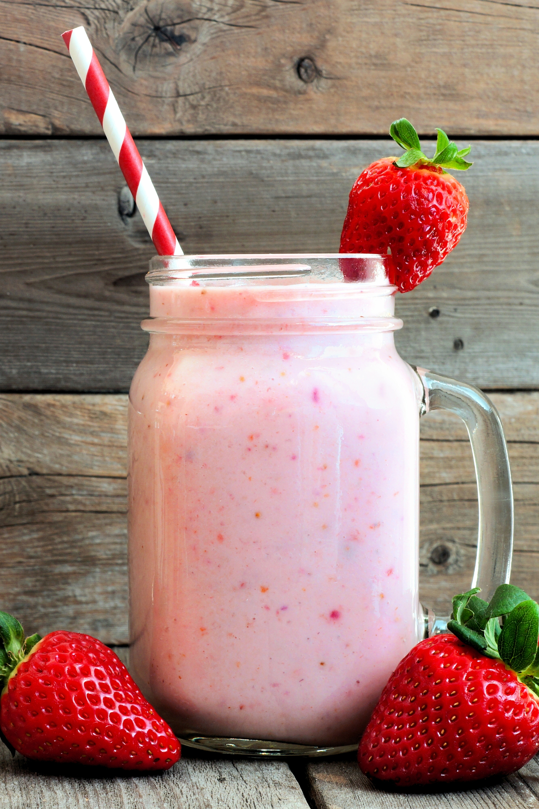

Strawberry Vanilla Protein Shake

Descriiption
Here is the recipe to make your very own Strawberry Vanilla Protein Shake!
Ingredient List
- 12 oz of filtered water
- 1 cup of filtered water ice
- 2 cups of fresh strawberries
- 2 servings of your favorite protein powder
- 1 tablespoon of vanilla extract
- 1 tablespoon of chia seeds
- 1 tablespoon of other seeds
Steps
- Place ice in the blender
- Pour water in the blender
- Place the strawberries in the blender
- Pour the vanilla extract in
- Pour the seeds in
- Add the protein powder
- Blend until desired consistency
- Serve cold & refrigerate when finished